^
Kolarstwo Szosowe
Strona Główna
Moje Wyprawy
Zawody
Tour de France
Tour de Pologne
Ankieta
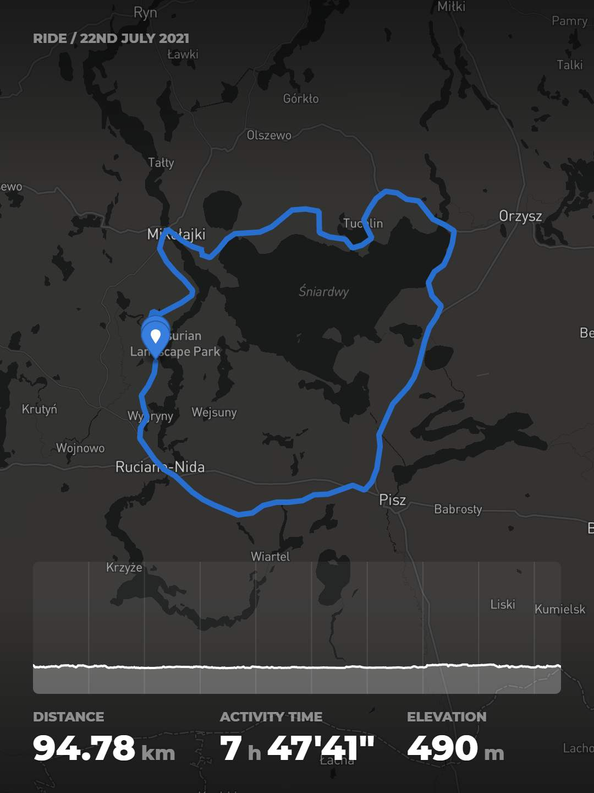
Okrążenie jeziora Śniardwy
Data: 22 lipiec 2021
Dystans: 94.78km
Czas trwania: 7h 47min
Prędkość średnia: 17.2km/h
Prędkość maksymalna: 46.1km/h
Łącznie wzniesień: 490m
Wygenerowana energia: 1.040kJ
___________________________
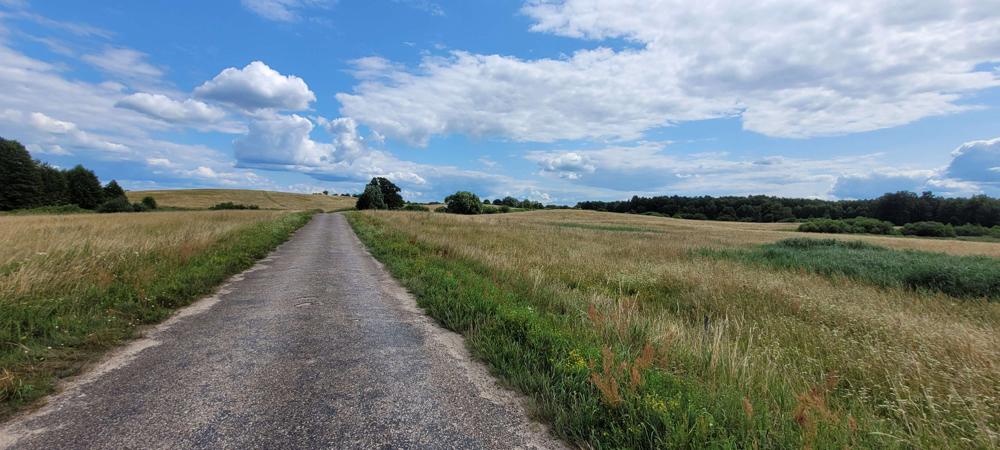
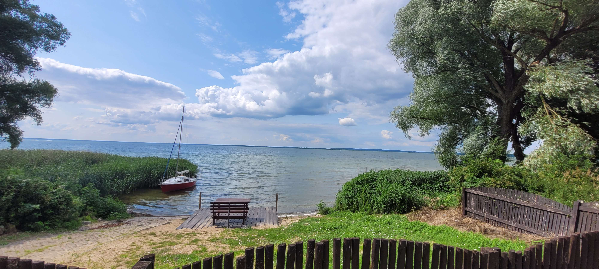
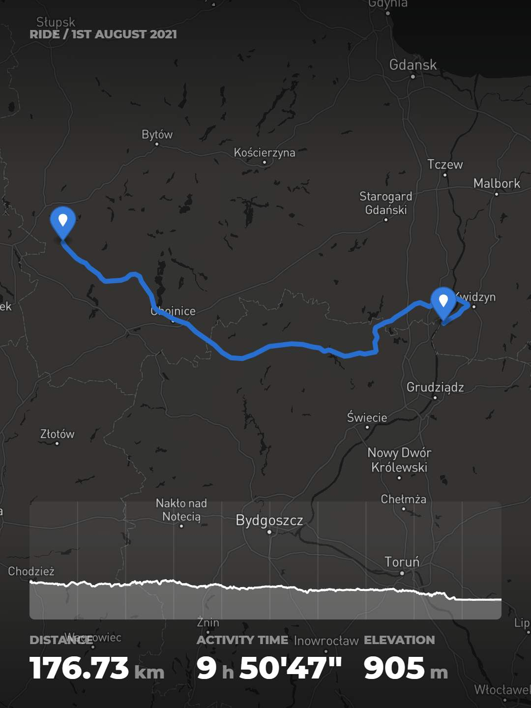
Przejechanie wszerz woj. pomorskiego
Data: 1 sierpień 2021
Dystans: 176.73km
Czas trwania: 9h 50min
Prędkość średnia: 21.7km/h
Prędkość maksymalna: 49.7km/h
Łącznie wzniesień: 905m
Wygenerowana energia: 2.310kJ
________________________
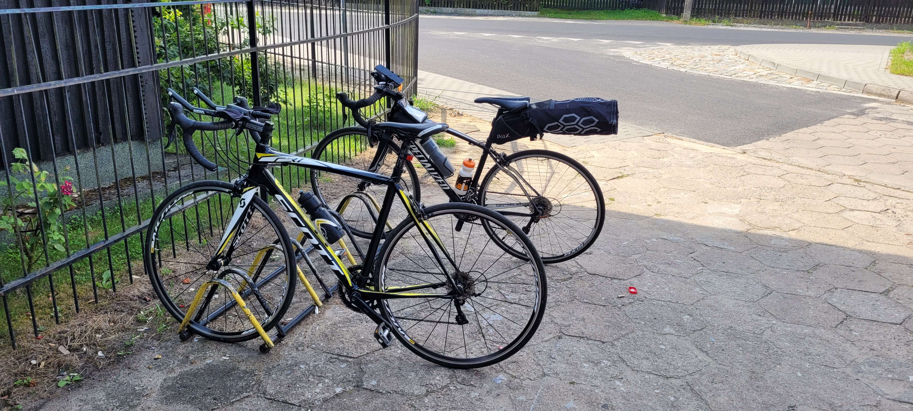
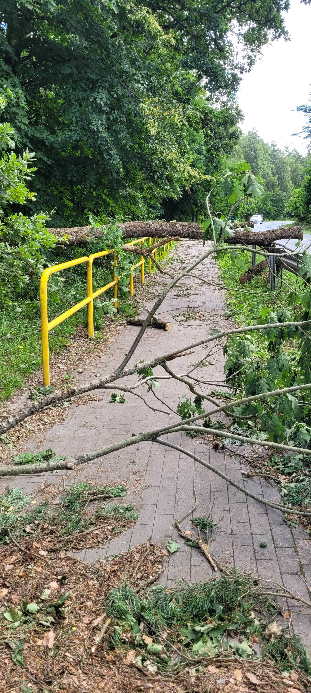
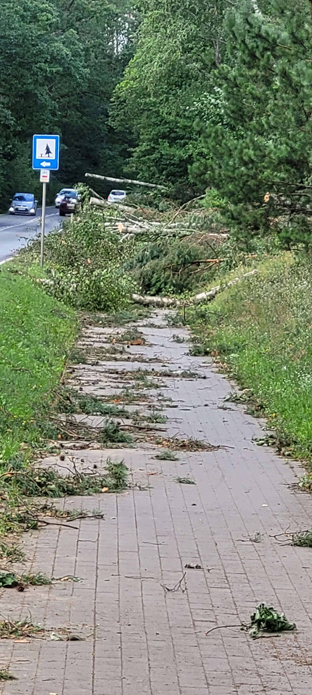
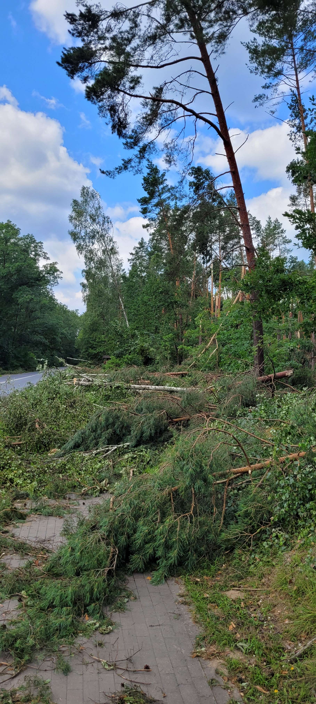
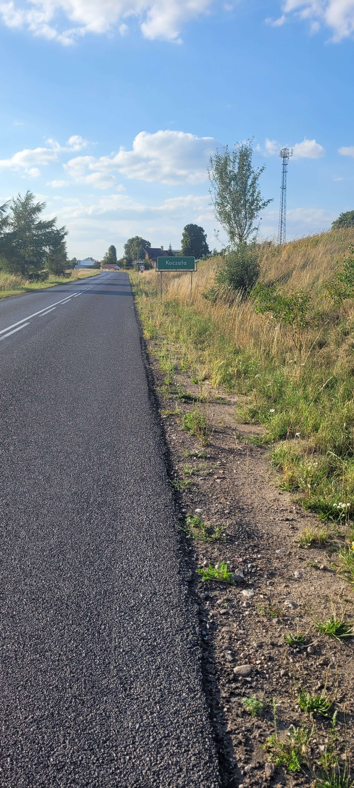
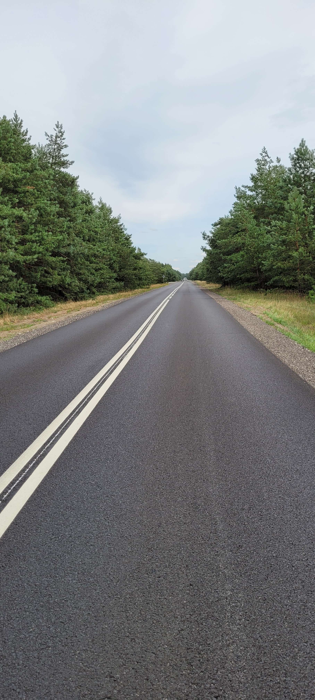
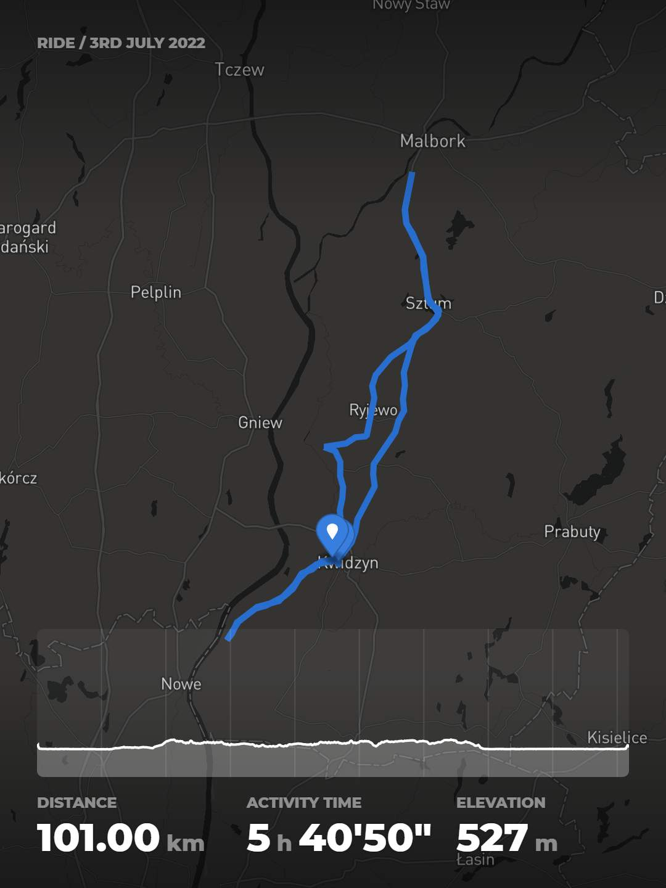
Kwidzyn --> Malbork
Data: 3 lipiec 2022
Dystans: 101.0km
Czas trwania: 5h 40min
Prędkość średnia: 22.6km/h
Prędkość maksymalna: 52.0km/h
Łącznie wzniesień: 527m
Wygenerowana energia: 1.378kJ
________________________
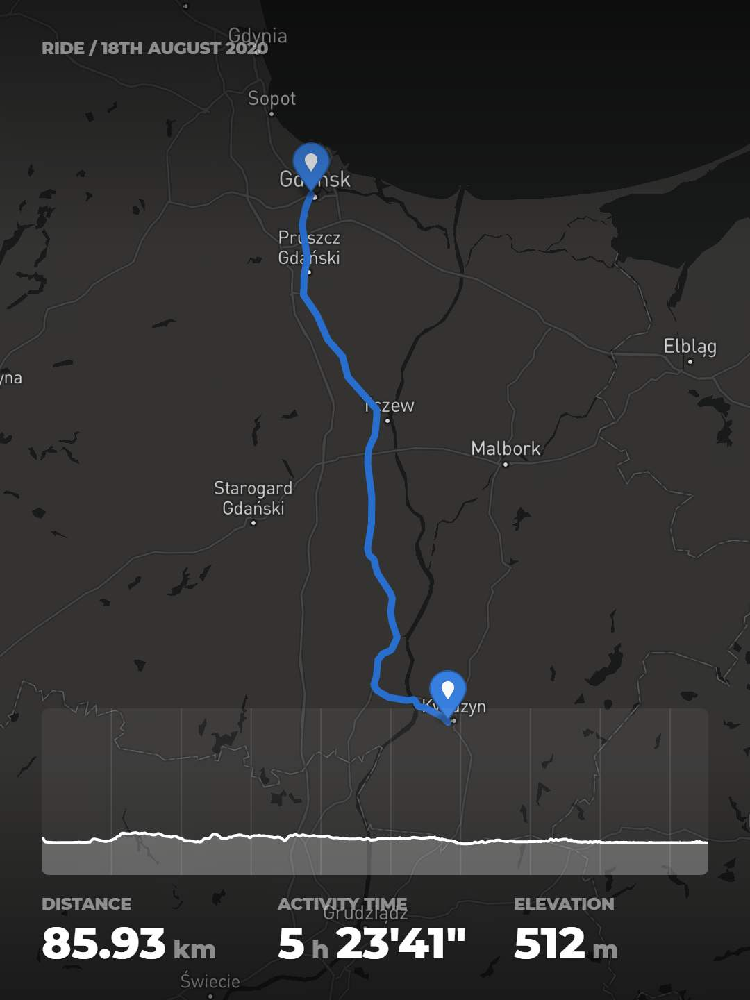
Kwidzyn --> Gdańsk
Data: 18 sierpień 2020
Dystans: 85.93km
Czas trwania: 5h 23min
Prędkość średnia: 20.1km/h
Prędkość maksymalna: 50.4km/h
Łącznie wzniesień: 512m
Wygenerowana energia: - - - -
________________________
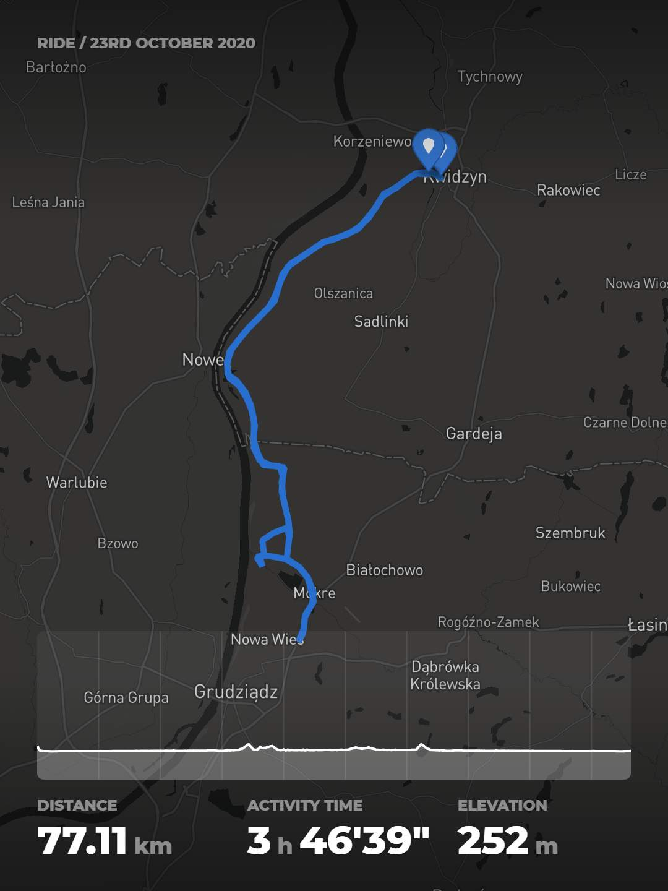
Kwidzyn --> Grudziądz
Data: 23 październik 2020
Dystans: 77.11km
Czas trwania: 3h 46min
Prędkość średnia: 23.9km/h
Prędkość maksymalna: 56.9km/h
Łącznie wzniesień: 252m
Wygenerowana energia: - - - -
________________________
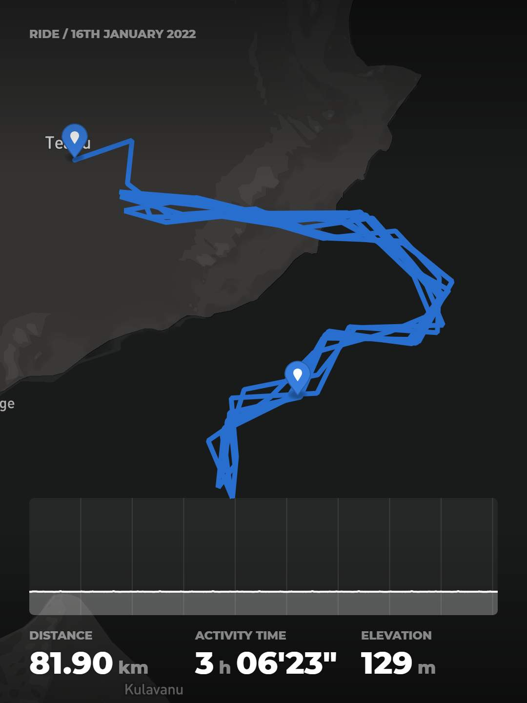
Zimowe kręcenie w domu - aplikacja ZWIFT
Data: 16 styczeń 2022
Dystans: 81.9km
Czas trwania: 3h 6min
Prędkość średnia: 27.3km/h
Prędkość maksymalna: 44.8km/h
Łącznie wzniesień: 129m
Wygenerowana energia: 1.016kJ
________________________
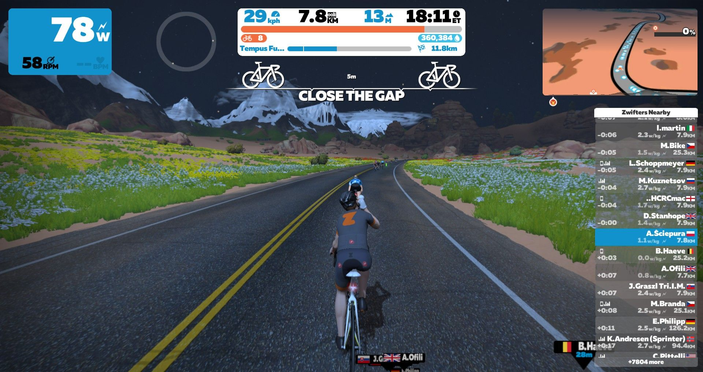
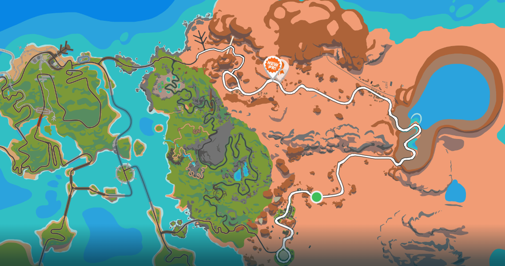